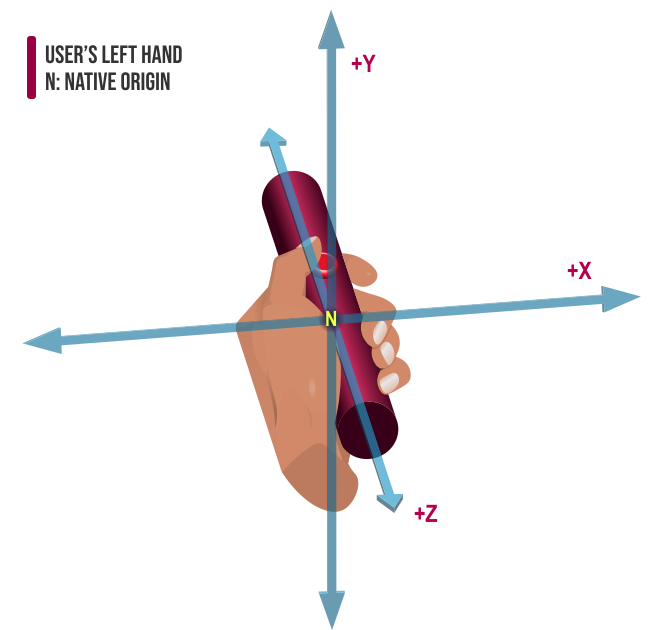

The read-only {{domxref("XRInputSource")}}
property gripSpace returns an {{domxref("XRSpace")}}
whose native origin tracks the pose used to render virtual objects so they appear to
be held in (or part of) the user's hand. For example, if a user were holding a
virtual straight rod, the native origin of this XRSpace would be located at
the approximate center of mass of the user's fist.
var xrSpace = xrInputSource.gripSpace;
An {{domxref("XRSpace")}} object representing the position and orientation of the input
device in virtual space, suitable for rendering an image of the device into the scene.
gripSpace is null if the input source is inherently
untrackable. For example, only inputs whose {{domxref("XRInputSource.targetRayMode",
"targetRayMode")}} is tracked-pointer provide a gripSpace.
Imagine that the controller is shaped like a straight rod, held in the user's fist. The native origin of the grip space is located at the centroid—the center of mass—of the user's fist, tracking the position of the user's hand.
The coordinate system for the left hand's grip space.

The coordinate system for the right hand's grip space.
As shown in the diagram above, the coordinate system is oriented as follows:
In tis example, taken from the frame rendering callback, the gripSpace is
used to render a mesh that represents the position and orieintation of the controller in
the virtual environment.
for (let source in xrSession.inputSources) {
if (source.gripSpace) {
let gripPose = frame.getPose(source.gripSpace, xrRefSpace);
if (gripPose) {
myDrawMeshUsingTransform(controllerMesh, gripPose.transform.matrix);
}
}
}
For each input source which has a value for gripSpace, this loop obtains
the {{domxref("XRPose")}} representing the position and orientation that are described
by gripSpace. If a valid pose is returned, a method
myDrawMeshUsingTransform() is called to draw the controller's mesh
transformed using the grip pose's transform matrix.
| Specification | Status | Comment |
|---|---|---|
| {{SpecName('WebXR','#dom-xrinputsource-gripspace','XRInputSource.gripSpace')}} | {{Spec2('WebXR')}} | Initial definition. |
{{Compat}}